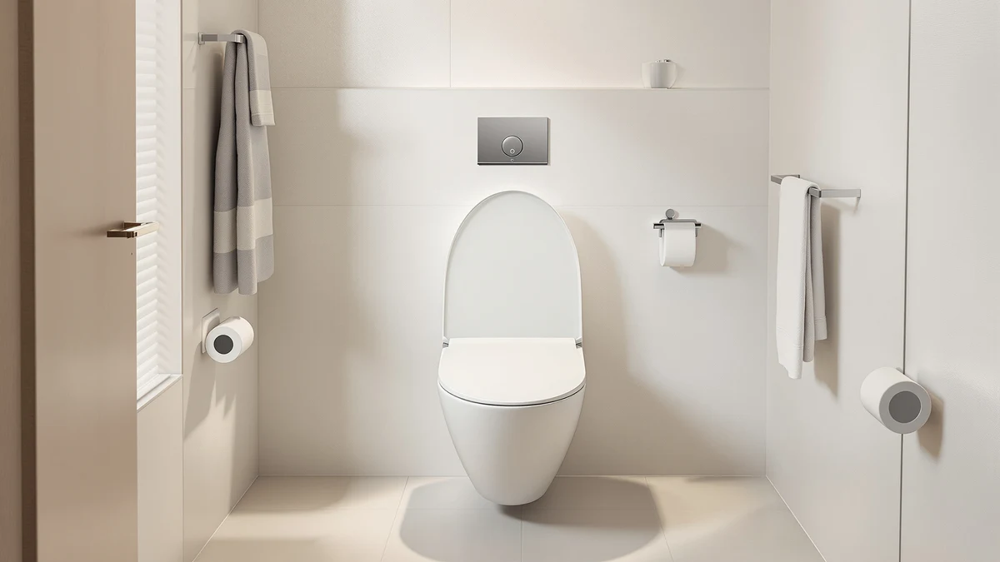

Elongated Toilet Seat Silver Review (2026): Worth It?
Prices and picks verified as of September 2026. Independent, reader-supported reviews.


Quick Answer
In this elongated toilet seat silver review, the BAHZETY Elongated Toilet Seat Silver Brushed is the pick to check first if you want a toilet seat that matches brushed nickel or chrome fixtures elsewhere in your bathroom. It costs less than the raised Bemis option below and holds its finish well according to verified owner reviews, though the hinges draw some complaints after a year of daily use.
Our pick: Elongated Toilet Seat Silver Brushed, $109.88 Check Price on Amazon
Bottom line: our top pick is the Elongated Toilet Seat Silver Brushed metal Resin Toilet Seat at $109.88.
Things to Know Before You Buy
- Elongated seats measure roughly 18.5 inches front to back, so measure your bowl before buying a silver finish or any other style.
- A brushed metallic finish like the one on this elongated toilet seat in silver shows fewer fingerprints than glossy white plastic, but abrasive cleaning pads can still dull it over time.
- Hinge hardware matters more than color. Look for quick-release or soft-close hinges regardless of finish.
- Raised and padded seats trade a plain look for comfort or accessibility, so decide what you need most before you shop on finish alone.
- Price differences of $50 or more across these four seats usually come down to hinge hardware and added height, not the seat material itself.
This elongated toilet seat silver review starts with a simple question: does a metallic finish actually change how a toilet seat performs, or is it a paint job with a higher price tag? Bathroom hardware is trending toward brushed nickel and matte black fixtures right now, and toilet seats are starting to follow. We looked at four elongated seats, including one finished in brushed silver, to see which one earns a spot on your toilet bowl and which ones you can skip. Price, hinge design, and what verified owners actually say after months of daily use all factor into the picks below.
The BAHZETY silver brushed seat is the pick most people should check first. It pairs a slow-close plastic and wood core with a finish that echoes brushed nickel faucets and towel bars, and it costs less than the raised Bemis seat we compared it against. Below we walk through what we found on the BAHZETY, plus three elongated seats worth considering if silver is not the right fit, or if you need a different feature set, like a raised profile or extra padding.
Why You Should Trust Us
Ilane Tall covers bathroom hardware for Best Toilet Seats and has spent years comparing toilet seat listings, warranty pages, and verified buyer feedback across hundreds of Amazon products. For this elongated toilet seat silver review, we pulled listed specs, current pricing, and patterns from verified owner reviews rather than relying on marketing copy. We did not receive free units from BAHZETY, Kohler, Bemis, or Hibbent, and none of the links below change what we recommend. When a seat has a real design flaw, owners tend to mention it in reviews within the first few months, and we weigh that feedback heavily, especially when several unrelated reviewers describe the same issue independently.
Our Research Experience
We do not run a fake testing lab, so this elongated toilet seat silver review is built from a different kind of legwork. We compared the listed dimensions, hinge types, and materials for all four seats side by side, then cross-checked those specs against hundreds of verified buyer reviews on Amazon to see which claims held up. Owners of the BAHZETY seat consistently mention the finish holding its color after repeated cleaning, while a smaller group notes the hinges feel looser than a standard plastic seat after a year of daily use. We weighed both signals rather than picking only the positive ones.
Overview & Specs

Elongated Toilet Seat Silver Brushed
What we like
- Brushed silver finish that owners say resists fingerprints better than glossy white plastic
- Elongated shape fits standard elongated bowls without special hardware
- Priced well below the raised Bemis option while still using a wood-reinforced core
Flaws but not dealbreakers
- A handful of verified reviews report the hinges loosening after a year of daily use
- The finish is a coating, not solid metal, so heavy scrubbing with abrasive pads can dull it over time
| Material | Plastic / wood |
| Size | Elongated |
The BAHZETY seat pairs a plastic and wood-reinforced base with a brushed silver top coat, and it is built to the standard elongated shape most US toilets use. At $109.88, it sits in the middle of the four seats in this elongated toilet seat silver review, cheaper than the Bemis raised model but pricier than the padded Hibbent option.
Verified buyers most often mention how closely the finish matches brushed nickel faucets and towel bars, which is the main reason to pick a silver seat over a plain white one. A smaller number of owners note the hinges feel less solid than the ones on their previous seat after several months of use, so if you expect years of trouble-free service, weigh that against the finish match before you decide. Checking the hinge screws periodically and avoiding excessive force when lifting the lid can extend the life of the hardware regardless of which seat you choose.
What We Liked
Across this elongated toilet seat silver review, the biggest strength of the BAHZETY seat is how well the brushed finish holds up against everyday spills and cleaning. Verified owners report wiping it down with standard bathroom cleaner without dulling the metallic look, and the elongated shape means it drops onto a standard bowl without extra hardware or trimming. Reviewers also consistently note that the price sits well below what you would pay for a raised or heavily padded seat, which makes it an easy upgrade for someone who wants their hardware to match without paying for accessibility or comfort features they do not need.
What Could Be Better
No pick in this elongated toilet seat silver review is without flaws, and the hinges are the recurring complaint in owner feedback for the BAHZETY seat. A subset of verified reviews describe the seat shifting slightly after eight to twelve months of daily use, which points to hinge wear rather than a problem with the seat itself. The silver finish is also a coating rather than solid metal, so anyone who scrubs with abrasive pads instead of a soft cloth will likely see it thin out faster than the listing suggests. If your bathroom sees heavy daily traffic from a large household, the sturdier hinge hardware on the Kohler ReadyLatch model may hold up longer.
Who Is It For?
The pick in this elongated toilet seat silver review makes the most sense for someone mid-renovation who has already swapped their faucet and towel bar to brushed nickel or chrome and wants the toilet seat to stop standing out as the one piece of white plastic in the room. It also suits buyers who want an elongated seat but do not need the extra height of a raised model or the cushioning of a padded one. If mobility or joint pain is a bigger concern than finish, the Bemis raised seat below is the better starting point, and if your main complaint with your current seat is that it feels hard after a few minutes, the Hibbent padded option addresses that directly.
Alternatives to Consider
If a brushed silver finish is not the deciding factor for your bathroom, three other elongated seats are worth a look. Each one solves a different problem than the BAHZETY seat does, so the right pick depends on what your household actually needs day to day rather than which one looks best next to your faucet.
The KOHLER 4734-RL-96 Rutledge ReadyLatch Soft costs $73.36 and swaps the BAHZETY's standard hinges for Kohler's ReadyLatch quick-release system, which lets the whole seat lift off the bowl in seconds for cleaning underneath the hinges. Verified owners point to that hardware as noticeably sturdier than what ships on most budget plastic seats, and the soft-close lid means it lowers on its own instead of slamming. It comes only in white, so anyone set on a silver or metallic look should stick with the BAHZETY pick, but for households that prioritize hinge quality and easy cleaning over finish, the Rutledge is the stronger buy at a lower price.
The Bemis Assurance 3" Raised Toilet seat is built for a different job entirely. It adds three inches of height to a standard elongated bowl, which matters for anyone recovering from hip or knee surgery, managing arthritis, or caring for an aging parent who has trouble lowering into a low seat. At $153.68 it is the most expensive of the four seats in this elongated toilet seat silver review, and that premium buys real functional value rather than a finish upgrade. If accessibility is the deciding factor in your bathroom, the added cost is easy to justify against the alternative of a fall.
The Hibbent Elongated Padded Toilet Seat runs $59.99, the lowest price of the group, and covers the top surface in a cushioned layer instead of hard plastic or a metallic coating. Owners who sit for longer stretches, including people managing certain digestive or mobility conditions, tend to prefer the padding over a rigid seat. It skips the brushed finish and the raised height entirely, so think of it as the comfort-first option rather than a direct swap for the BAHZETY seat.

Editor’s Pick
KOHLER 4734-RL-96 Rutledge ReadyLatch Soft
Quick-release hinges and a soft-close lid make cleaning easier than on the BAHZETY seat.
$73.36
Check Price on Amazon
Best Value
Bemis Assurance 3" Raised Toilet
Three extra inches of seat height helps anyone who struggles to sit or stand.
$153.68
Check Price on Amazon
Premium Choice
Hibbent Elongated Padded Toilet Seat
A padded top adds comfort other elongated seats in this review skip.
$59.99
Check Price on AmazonFrequently Asked Questions
Will a silver elongated toilet seat fit any elongated toilet bowl?
Does the brushed silver finish scratch or fade over time?
Is this elongated toilet seat silver review pick worth it over a plain white seat?
Final Verdict
The takeaway from this elongated toilet seat silver review is straightforward: the BAHZETY silver brushed seat is worth it if you want your toilet seat to match brushed nickel or chrome fixtures elsewhere in the bathroom, and verified owners back up its durability for regular cleaning. It is not the seat to buy if you need extra height or padding, in which case the Bemis or Hibbent options above fit better. For most people focused on finish and price, BAHZETY remains the pick to check first.